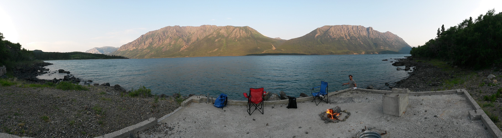
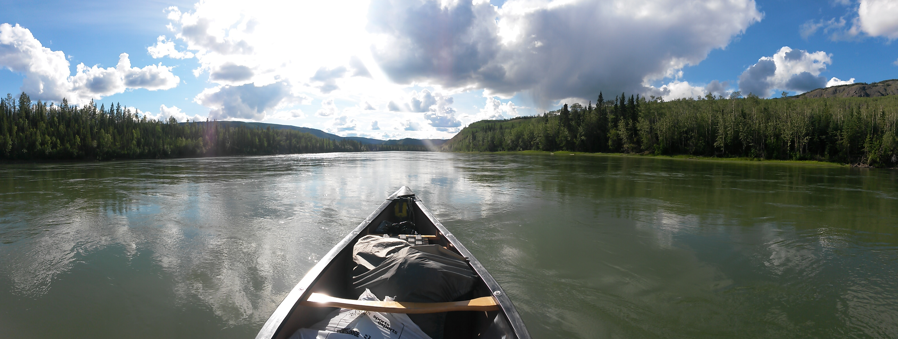
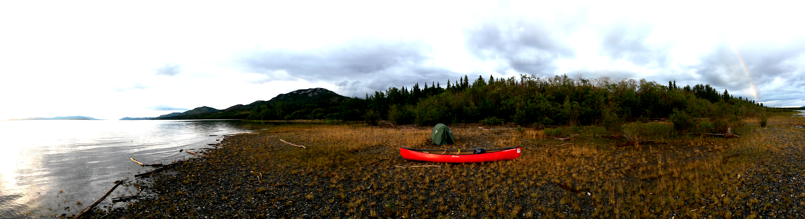
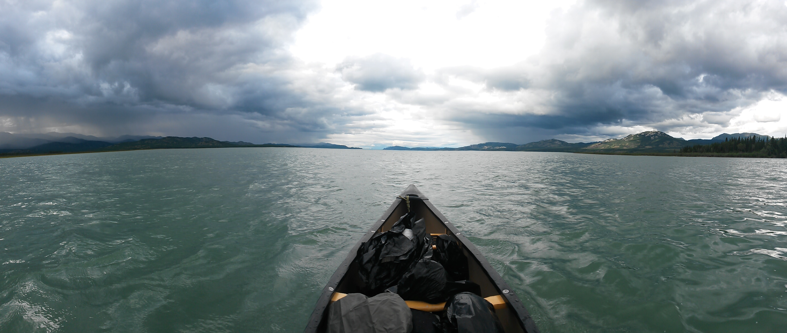

Lion in Kanada
Innerhalb von fuenf Monaten bin ich an der Westkueste vom Sueden in den Norden und zurueck gereist. Ohne Plan gings in Vancouver los. Doch nach vier Tagen stand fest: Es geht nach Williams Lake.

Von Williams Lake ging es drei Stunden mit dem Auto richtung Westen, tief in die Wildnis. Dort habe ich bei Chris wwoofing gemacht. Chris lebt Mitten im Wald. Bei der Ankunft haben wir Grizzlybaerfussspuren entdeckt. Nur zirka 500 Meter entfert von unserer neuen Unterkunft. Ziemlich gruselig. Mein erster Gedanke war: die sehen ja aus wie Menschenfuesse... so laenglich!

Izaro, Lasse und ich haben viele coole Dinge gemacht. Kettensaegenmasaka, Baeume pellen und Abends im Holzfaellerstil gepokert. Ausserdem haben wir Zeug gebaut. Eine wundervolle Zeit!
Awesome!
Am Ende des Monats haben wir eine Wanderung gemacht. Zuerst wollte Izaro nicht mitkommen, wegen den Tieren und weil es keinen Weg gab. Aber der Daene und ich konnten sie ueberzeugen. Wir kaempften uns durch den Busch und erreichten die Spitze!!

Harry(braun) und Badger(schwarz) waren fast immer dabei. Eine Nacht haben wir nach einer Party von Chris Freunden mit den Beiden im Truck gepennt. Schoen zu sehen, wie sich Tiere entspannen, wenn sie das machen duerfen, was in ihrer Natur steckt.
Badger wurde von seinen alten Besitzern geschlagen und festgebunden. Nachdem Chris ihn aufgenommen hat, war er Maennern gegenueber sehr agressiv. Bei ihr hat er dann viele freundliche Maenner getroffen, hatte die Freiheit sich total frei im Wald zu bewegen und die Aufgabe zusammen mit Harry Baeren vom Grundstuck zu jagen.
Nun ist Badger ziemlich alt und jedes mal, wenn Harry bellend in den Wald rennt, versucht er mitzuhalten, um seine Aufgabe zu erfuellen.
Badger wurde von seinen alten Besitzern geschlagen und festgebunden. Nachdem Chris ihn aufgenommen hat, war er Maennern gegenueber sehr agressiv. Bei ihr hat er dann viele freundliche Maenner getroffen, hatte die Freiheit sich total frei im Wald zu bewegen und die Aufgabe zusammen mit Harry Baeren vom Grundstuck zu jagen.
Nun ist Badger ziemlich alt und jedes mal, wenn Harry bellend in den Wald rennt, versucht er mitzuhalten, um seine Aufgabe zu erfuellen.

Von Chris aus bin ich mit einer Mitfahrgelegenheit weiter in den Norden. Danke fuer die coole Zeit an alle Freunde von Chirs, ihr sebst und Izaro und Lasse. Mit einem Zwischenstop in Prince George bin ich in Whitehorse gelandet.
In der Naehe von Carcross, an der Grenze zu Alaska, habe ich wieder gewwooft. Zusammen mit Danny und Tony hab ich dort wieder Zeug gebaut. Nagelpistolen sind der Hammer! Trotz des Bauens blieb sehr viel Zeit zum Lesen, Fischen und alleine sein.


Tony isn ziemlich rauer Typ. Er hat Kontakte zu einer Drogen/Motorrad-Gang, ist Ex-Militaer, hat gerne mal Dreier, hat fuer jeden Menschen den er im Krieg toeten musste ein Tatto und zwei Toechter. Ausserdem ist sein Handyklingelton ein Shotgun sound! Heeeeftig!

Es wird Zeit fuer ein weiteres Abendteuer! Lass uns Kanu fahren. Yeaa! Schon mal voher ne lange kanutour gemacht? Neee. Was muss man da denn auch schon gross machen, n bisschen paddeln? Ha, das waer doch gelacht! .... ... falsch gelacht.. aehh ich mein: falsch gedacht!

In Wahrheit muss man noch nicht mal paddeln, weil die Stroemung so stark ist! Mein erstes Camp wurde sogar von nem Regenbogen verschoenert! Ohhhh was ist denn das da hinten? Ist das Gold oder n Baerchen?

Wenn man allerdings auf dem See Laberge ist, hat man keine Stroemung mehr, dafuer aber Wetterfronten. Toll! Scheisse! Ich hasse den verkackten See Laber-was-auch-immer!!!

Verabschiedung vom See Lager-lass-mich-endlich-in-ruhe-hab-die-Schnauze-voll-vom-See. (schon wieder ne Wetterfront da hinten.... arrrrrr)
Die restliche Tour hat sich nach dem See wie eine Autobahn angefuehlt. Ich liebe Stroemung. Sie passt auch voll in meine Philosophie fuers Leben.
Die Qual ueber den See hat sich tatsaechlich bezahlt gemacht. Die Waelder enden nicht, die Berge werden ganz langsam groesser und groesser je weiter man an sie heran treibt und man fangt an sich als Teil des Flusses zu fuehlen.
Die Qual ueber den See hat sich tatsaechlich bezahlt gemacht. Die Waelder enden nicht, die Berge werden ganz langsam groesser und groesser je weiter man an sie heran treibt und man fangt an sich als Teil des Flusses zu fuehlen.


Five Finger Rapids!
Dawson City is awesome! Abgesehen von diesem geilen Gefuehl nach 10 Tagen angekommen zu sein und sich ein Hotelzimmer zu goennen, ist Dawson eine sehr liebensvolle, kreative und freie Stadt. Dort hab ich Caveman Bill kennengelernt. Er ist vor vielen Jahren nach Dawson gekommen. Dann hat er so ne gemuetliche Hoehle gefunden. Gleich auf der anderen Seite vom Fluss. Nun lebt er da. Im Winter, wenn alles kalt und zugefrohren ist, halten die schweren Steine der Hoehle sie, einmal erhitzt, zwei Wochen lang warm.
Ich habe sehr viele sehr coole Menschen getroffen. Und alle sind happy, weil alle gerade im Urlaub sind, nice! Mit Maggie und Sarah(Bild) hab ich auf dem Dawson City Music Festival gearbeitet. Vielen lieben Dank fuer die wunderschoene Zeit!

Awesome!